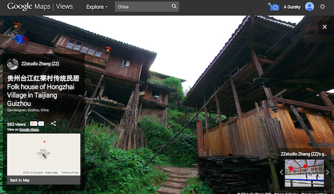
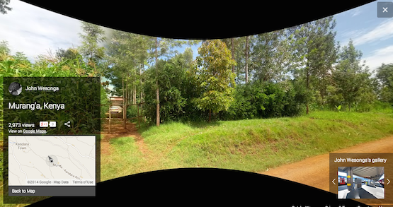
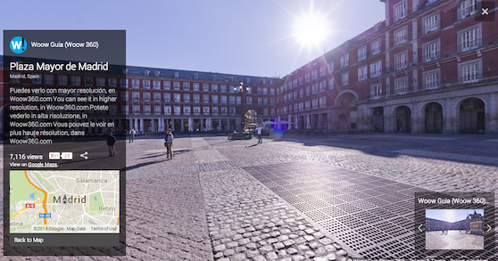

Google Maps Photospheres
Google Maps Photospheres is a new part of Google Maps. It's like streetview, but with two main differences:
  
This is an example of how some of the best things on the internet, are not made by one person or company, but are made by many people all over the world working together to contribute. Wikipedia works the same way. No one person wrote wikipedia. Everyone who wanted to shared their knowledge to create that site. Any one of you could contribute to Google Views (or Wikipedia).
Today's Task
You will use Google Photospheres to see what your country looks like on the ground.
Click here to go to Google Views Photoshperes.
When you are done, please answer the question on the Form below.
Extension Activity:
Borrow an iPod Touch to make a Photosphere of our classroom.
Back to School Portal